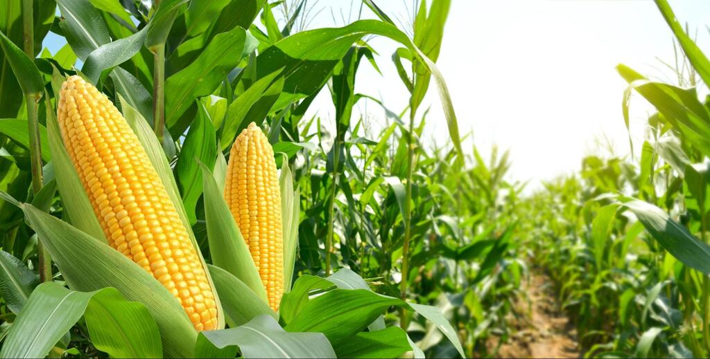
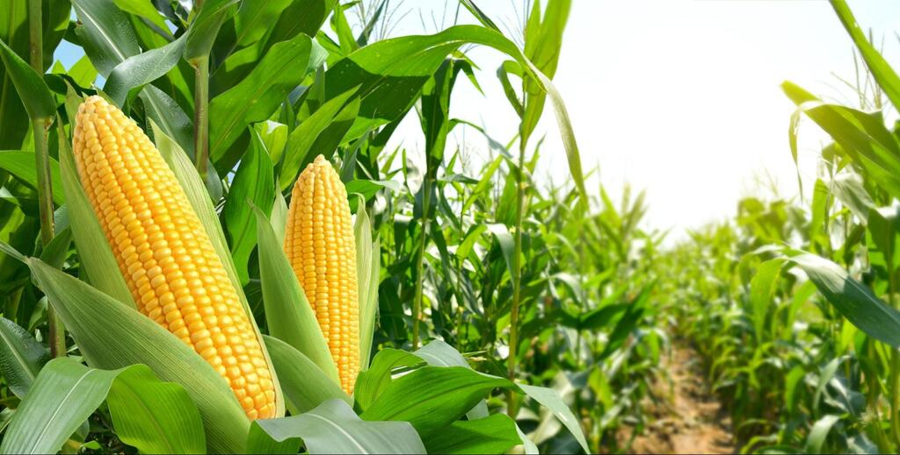
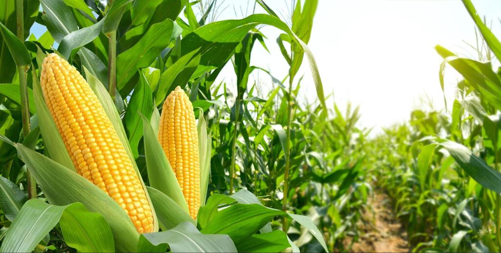

| Faculdade particular | Valor Mensal | Faculdade Pública | Nº de candidatos por vaga |
| UTP (5 anos) | R$ 3.168,00 (manhã) e R$ 2.850,00 (noite) | UFRGS (5 anos) | 67 vagas (11,31) por vaga |
| PUCPR (5 anos) | R$ 5.945,45 | UDESC (5 anos) | 40 vagas (13,75) por vaga |
| UniMater (5 anos) | R$ 2.860,00 | UENF (5 anos) | 40 vagas (47,33) por vaga |
|
Ementa UFRGS1º PERÍODO · BIOLOGIA CELULAR E TECIDUAL VETERINÁRIA I · BIOQUÍMICA BÁSICA · ZOOTECNIA GERAL · GENÉTICA ANIMAL · ANATOMIA VETERINÁRIA DESCRITIVA I · INTRODUÇÃO À MEDICINA VETERINÁRIA 2º PERÍODO · BIOLOGIA CELULAR E TECIDUAL VETERINÁRIA II · BIOESTATÍSTICA · FISIOLOGIA VETERINÁRIA I · BIOQUÍMICA COMPARADA · ANATOMIA VETERINÁRIA DESCRITIVA II · SAÚDE PÚBLICA VETERINÁRIA 3º PERÍODO · BEM-ESTAR ANIMAL · FISIOLOGIA VETERINÁRIA II · MICROBIOLOGIA VETERINÁRIA I · PARASITOLOGIA VETERINÁRIA I · IMUNOLOGIA VETERINÁRIA · FARMACOLOGIA BÁSICA 4º PERÍODO · PATOLOGIA GERAL VETERINÁRIA · MICROBIOLOGIA DOS PRODUTOS DE ORIGEM ANIMAL · NATUREZA, SOCIEDADE E DESENVOLVIMENTO · NUTRIÇÃO ANIMAL · PARASITOLOGIA VETERINÁRIA II · MICROBIOLOGIA VETERINÁRIA II · FARMACOLOGIA APLICADA E TERAPÊUTICA · EPIDEMIOLOGIA VETERINÁRIA 5º PERÍODO · PATOLOGIA VETERINÁRIA · SEMIOLOGIA GERAL VETERINÁRIA · PATOLOGIA CLÍNICA VETERINÁRIA · DOENÇAS INFECCIOSAS DOS ANIMAIS DOMÉSTICOS · DOENÇAS PARASITÁRIAS DOS ANIMAIS DOMÉSTICOS · ANESTESIOLOGIA VETERINÁRIA · FUNDAMENTOS EM CIRURGIA VETERINÁRIA · VIVÊNCIA EM ANESTESIOLOGIA VETERINÁRIA · NUTRIÇÃO APLICADA A ANIMAIS DE PRODUÇÃO 6º PERÍODO · MEDICINA DE CÃES E GATOS · CIRURGIA DE CÃES E GATOS I · MEDICINA EQUINA · MEDICINA DE RUMINANTES · FISIOPATOLOGIA DA REPRODUÇÃO ANIMAL · VIVÊNCIA EM MEDICINA DE CÃES E GATOS · VIVÊNCIA EM TÉCNICA CIRÚRGICA · FORRAGICULTURA · BOVINOCULTURA DE CORTE · BOVINOCULTURA DE LEITE 7º PERÍODO · ECONOMIA RURAL · CIRURGIA DE CÃES E GATOS II · MEDICINA DE EMERGÊNCIA E TERAPIA INTENSIVA VETERINÁRIA · CIRURGIA DE GRANDES ANIMAIS · DIAGNÓSTICO POR IMAGEM · DOENÇAS DAS AVES DOMÉSTICAS · BIOTECNOLOGIA DA REPRODUÇÃO ANIMAL · SUINOCULTURA · AVICULTURA · PROJETO DE TCC 8º PERÍODO · INSPEÇÃO DE PRODUTOS DE ORIGEM ANIMAL · TECNOLOGIA DE PRODUTOS DE ORIGEM ANIMAL · DOENÇAS DOS SUÍNOS · OBSTETRÍCIA VETERINÁRIA · MEDICINA ZOOLÓGICA · VIGILÂNCIA SANITÁRIA E SEGURANÇA DE ALIMENTOS 9º PERÍODO · EXTENSÃO RURAL · PLANEJAMENTO E ADMINISTRAÇÃO RURAL · ECOLOGIA E MEDICINA DA CONSERVAÇÃO · BIOSSEGURIDADE DE REBANHOS E ORGANISMOS AQUÁTICOS · PROGRAMAS NACIONAIS E INTERNACIONAIS DE SANIDADE DE REBANHOS · ZOONOSES · DEONTOLOGIA E RESPONSABILIDADE TÉCNICA VETERINÁRIA · MELHORAMENTO ANIMAL · SAÚDE AMBIENTAL E BIOSSEGURANÇA 10º PERÍODO · TRABALHO DE CONCLUSÃO DE CURSO (TCC) · ESTÁGIO CURRICULAR SUPERVISIONADO OBRIGATÓRIO Ementa UDESC1º PERÍODO · Anatomia I · Bioquímica de Biomoléculas · Deontologia · Epistemologia e Metodologia Científica · Estatística · Histologia Geral 2º PERÍODO · Anatomia II · Bioquímica Metabólica · Ecologia · Experimentação Animal · Genética · Histologia e Embriologia 3º PERÍODO · Anatomia Topográfica · Fisiologia I · Imunologia · Microbiologia Geral · Parasitologia I · Sociologia Aplicada à Medicina Veterinária 4º PERÍODO · Economia e Administração · Epidemiologia · Farmacologia Geral · Fisiologia II · Microbiologia Especial · Nutrição Animal · Parasitologia II 5º PERÍODO · Alimentos e Alimentação Animal · Comunicação e Extensão Rural · Farmacodinâmica · Forragicultura · Patologia Clínica Veterinária · Patologia Geral · Semiologia 6º PERÍODO · Clínica Médica de Ruminantes · Doenças Infecto-contagiosas · Patologia Especial · Piscicultura · Suinocultura · Terapêutica 7º PERÍODO · Anestesiologia · Bovinocultura de Corte · Clínica Médica de Cães e Gatos I · Diagnóstico por Imagem · Fisiopatologia da Reprodução I · Saúde Pública Veterinária · Técnica Cirúrgica 8º PERÍODO · Avicultura · Bovinocultura de Leite · Clínica Médica de Equinos · Inspeção e Tecnologia de Produtos de Origem Animal I · Ovinocultura · Patologia e Clínica Cirúrgica · Sanidade Suína 9º PERÍODO · Clínica Médica de Cães e Gatos II · Doenças das Aves · Fisiopatologia da Reprodução II · Inspeção e Tecnologia de Produtos de Origem Animal II · Obstetrícia · Toxicologia e Plantas Tóxicas 10º PERÍODO · Estágio Curricular Supervisionado Ementa UENF1º PERÍODO · Anatomia dos Animais Domésticos · Biologia Celular Geral · Fundamentos do Conhecimento · Introdução à Medicina Veterinária · Pré-Cálculo · Química Geral I 2º PERÍODO · Anatomia dos Animais Domésticos II · Bioética e Biossegurança · Bioquímica Geral · Embriologia dos Animais Domésticos · Histologia Veterinária · Imunologia Veterinária · Química Orgânica 3º PERÍODO · Anatomia Topográfica dos Animais Domésticos · Bioestatística · Biofísica · Bioquímica II · Fisiologia dos Sistemas · Genética Básica · Saúde do Ecossistema · Bem Estar Animal 4º PERÍODO · Bacteriologia Veterinária · Fisiologia da Digestão · Micologia Veterinária · Parasitologia Veterinária · Patologia Geral · Virologia Veterinária · Piscicultura 5º PERÍODO · Bioclimatologia Animal · Caprinocultura e Ovinocultura · Economia Agrícola · Epidemiologia · Farmacologia Veterinária · Reprodução Animal I · Semiologia Veterinária · Patologia Clínica 6º PERÍODO · Administração Rural · Anatomia Patológica Veterinária · Bovinocultura e Equideocultura · Extensão Rural · Nutrição e Forragicultura · Suinocultura e Avicultura · Tecnologia de Produtos de Origem Animal 7º PERÍODO · Anestesiologia Veterinária · Clínica Médica dos Grandes Animais Domésticos · Doenças Parasitárias dos Animais Domésticos · Melhoramento Genético Animal · Radiologia Veterinária · Técnicas Cirúrgicas · Terapêutica Veterinária I 8º PERÍODO · Clínica Médica dos Pequenos Animais Domésticos · Doenças Infectocontagiosas dos Animais Domésticos · Patologia e Clínica Cirúrgica Veterinária · Reprodução Animal II · Terapêutica Veterinária II 9º PERÍODO · Inspeção de Produtos de Origem Animal · Medicina Veterinária Preventiva e Saúde Pública · Obstetrícia Veterinária · Política do Desenvolvimento Agrícola · Toxicologia Veterinária · Estágio Curricular Obrigatório I · Trabalho de Conclusão de Curso I 10º PERÍODO · Estágio Curricular Obrigatório II · Atividades Complementares (AAC) · Trabalho de Conclusão de Curso II · Atividades Curriculares de Extensão (ACE I, ACE II, ACE III) |

| Faculdade particular | Valor Mensal | Faculdade Pública | Nº de candidatos por vaga |
| UniMater(5 anos) | R$ 2.125,00 | UTFPR (5 anos) | (5,68) por vaga |
| PUCPR (5 anos) | R$ 2.637,75 | UEL (5 anos) | (11,74) por vaga |
| UNOESC (5 anos) | R$ 1.363,68 | UniCentro (5 anos) | (8,14) por vaga |
|
Ementa UniMater1º PERÍODO · Matemática · Biologia Celular e Molecular · Introdução à Agronomia · Química Geral · Economia Rural [EaD] · Desenho Técnico · Projeto Integrador Extensionista · Zoologia Geral [EaD] 2º PERÍODO · Solos · Cálculo 1 [EaD] · Anatomia e Morfologia Vegetal · Filosofia e Ética [EaD] · Física Geral · Química Orgânica · Informática e Expressão Gráfica · Projeto Integrador Extensionista 2 3º PERÍODO · Solos · Agrometeorologia [EaD] · Bioquímica Aplicada · Botânica Sistemática · Estatística e Probabilidade · Química Analítica · Metodologia Científica [EaD] · Projeto Integrador Extensionista 3 4º PERÍODO · Comercialização Agrícola [EaD] · Fisiologia Vegetal · Fertilidade do Solo e Nutrição Mineral de Plantas · Hidráulica Aplicada · Topografia e Georreferenciamento · Microbiologia Agrícola · Projeto Integrador Extensionista 4 5º PERÍODO · Manejo Integrado de Solos e Água · Entomologia · Fitopatologia · Irrigação e Drenagem · Experimentação Agrícola · Agricultura e Sustentabilidade [EaD] · Humanidades [EaD] · Projeto Integrador Extensionista 5 6º PERÍODO · Controle de Plantas Daninhas · Parasitologia e Manejo Integrado de Pragas · Construções Rurais · Genética e Melhoramento de Plantas · Forragicultura · Projeto Integrador Extensionista · Gestão Rural [EaD] 7º PERÍODO · Fitotecnia · Silvicultura · Olericultura · Mecanização Agrícola · Nutrição Animal · Disciplina Optativa [EaD] · Projeto Integrador Extensionista 7 8º PERÍODO · Zootecnia · Fitotecnia · Fruticultura · Tecnologia de Sementes e Grãos · Paisagismo [EaD] · Trabalho de Conclusão de Curso 1 – Projeto e Pesquisa · Projeto Integrador Extensionista 8 9º PERÍODO · Zootecnia · Fitotecnia · Extensão Rural · Piscicultura · Tecnologia de Produção de Alimentos · Trabalho de Conclusão de Curso 2 – Desenvolvimento e Defesa · Projeto Integrador Extensionista 9 10º PERÍODO · Estágio Supervisionado Obrigatório Ementa PUCPR1º PERÍODO · Introdução à Agronomia · Expressão Gráfica · Morfologia e Sistemática Vegetal · Meio Ambiente, Sustentabilidade e Saúde · Tecnologias Aplicadas na Agricultura · Química Geral Aplicada · Cálculo 2º PERÍODO · Geologia e Pedologia · Fisiologia Vegetal · Bioquímica Aplicada · Filosofia · Física Aplicada · Microrganismos na Agricultura · Fundamentos de Economia Agrícola 3º PERÍODO · Geomática · Infraestrutura da Propriedade Rural · Fertilidade do Solo e Adubação · Organização, Sistemas e Métodos na Agricultura · Máquinas Agrícolas · Estatística · Animais de Produção 4º PERÍODO · Mecanização Agrícola · Experimentação Agrícola · Entomologia · Genética Aplicada · Sistema de Informação Geográfica · Agrometeorologia e Climatologia · Nutrição de Plantas · Sistemas de Produção Animal · Fitopatologia 5º PERÍODO · Biologia e Manejo de Plantas Daninhas · Ecofisiologia Vegetal · Manejo e Conservação do Solo e da Água · Parasitologia Agrícola · Manejo de Doenças de Plantas · Melhoramento Genético · Propagação de Plantas · Ética 6º PERÍODO · Agroindustrialização · Tecnologia de Sementes · Defensivos Agrícolas e Tecnologia de Aplicação · Armazenamento de grãos · Inovações Biotecnológicas no Agronegócio · Silvicultura I · Teologia e Sociedade · Olericultura 7º PERÍODO · Produção de Espécies Forrageiras · Produção de Gramíneas e Leguminosas · Hidráulica e Irrigação · Fruticultura I · Silvicultura II · Projeto de Extensão 1 8º PERÍODO · Projeto de Extensão · Política e Desenvolvimento Rural · Fruticultura II · Paisagismo e Floricultura · Agricultura Digital · Metodologia Cientifica e Bioética em Pesquisa 9º PERÍODO · Projeto de Extensão · Bioinsumos e Biofábricas · Gestão de Propriedades Rurais e da Produção · Sociologia e Extensão Rural · Identidade e Prática Profissional do Engenheiro Agrônomo 10º PERÍODO · Produção Científica · Estágio Supervisionado em Agronomia Ementa UNOESC1º PERÍODO · Botânica · Matemática e Tecnologia · Microbiologia Agropecuária · Prática Profissional e Inserção Comunitária I · Química Geral 2º PERÍODO · Anatomia e Fisiologia Animal · Entomologia Agrícola · Fisiologia Vegetal · Fundamentos de Bioquímica · Linguagem e Método Científico · Meteorologia e Hidrologia · Prática Profissional e Inserção Comunitária II 3º PERÍODO · Biotecnologia Vegetal · Estatística e Experimentação · Pedologia e Edafologia · Plantas Daninhas · Prática Profissional e Inserção Comunitária III · Ética, Cultura e Contemporaneidade 4º PERÍODO · Economia e Administração do Agronegócio · Fitopatologia Agrícola · Genética e Melhoramento · Nutrição Vegetal e Fertilidade do Solo · Prática Profissional e Inserção Comunitária IV · Topografia e Geoprocessamento 5º PERÍODO · Empreendedorismo e Inovação · Forragicultura · Manejo e Conservação do Solo e Água · Mecanização Agrícola · Prática Profissional e Inserção Comunitária V · Silvicultura 6º PERÍODO · Alimentação e Nutrição Animal · Culturas de Verão · Eletivo I · Gestão Agroindustrial · Olericultura e Floricultura · Prática Profissional e Inserção Comunitária VI 7º PERÍODO · Bovinocultura · Culturas de Inverno e Agroindustriais · Eletivo II · Fruticultura · Hidráulica, Irrigação e Drenagem · Prática Profissional e Inserção Comunitária VII 8º PERÍODO · Agroecologia · Construções Rurais · Gestão Ambiental e Sustentabilidade · Prática Profissional e Inserção Comunitária VIII · Suinocultura e Avicultura · Trabalho de Curso I 9º PERÍODO · Agricultura de Precisão e Digital · Eletivo III · Projetos Agroindustriais · Prática Profissional e Inserção Comunitária IX · Tecnologia de Sementes e Armazenamento · Trabalho de Curso II 10º PERÍODO · Atividade Curricular Complementar · Avaliações, Perícias e Legislação Profissional · Estágio Curricular Supervisionado · Extensão Rural e Política Agrícola · Prática Profissional e Inserção Comunitária X · Tecnologia de Produtos Agropecuários e Pós Colheita
Ementa UTFPR1º PERÍODO · Botânica · Matemática e Tecnologia · Microbiologia Agropecuária · Prática Profissional e Inserção Comunitária I · Química Geral 2º PERÍODO · Anatomia e Fisiologia Animal · Entomologia Agrícola · Fisiologia Vegetal · Fundamentos de Bioquímica · Linguagem e Método Científico · Meteorologia e Hidrologia · Prática Profissional e Inserção Comunitária II 3º PERÍODO · Biotecnologia Vegetal · Estatística e Experimentação · Pedologia e Edafologia · Plantas Daninhas · Prática Profissional e Inserção Comunitária III · Ética, Cultura e Contemporaneidade 4º PERÍODO · Economia e Administração do Agronegócio · Fitopatologia Agrícola · Genética e Melhoramento · Nutrição Vegetal e Fertilidade do Solo · Prática Profissional e Inserção Comunitária IV · Topografia e Geoprocessamento 5º PERÍODO · Empreendedorismo e Inovação · Forragicultura · Manejo e Conservação do Solo e Água · Mecanização Agrícola · Prática Profissional e Inserção Comunitária V · Silvicultura 6º PERÍODO · Alimentação e Nutrição Animal · Culturas de Verão · Eletivo I · Gestão Agroindustrial · Olericultura e Floricultura · Prática Profissional e Inserção Comunitária VI 7º PERÍODO · Bovinocultura · Culturas de Inverno e Agroindustriais · Eletivo II · Fruticultura · Hidráulica, Irrigação e Drenagem · Prática Profissional e Inserção Comunitária VII 8º PERÍODO · Agroecologia · Construções Rurais · Gestão Ambiental e Sustentabilidade · Prática Profissional e Inserção Comunitária VIII · Suinocultura e Avicultura · Trabalho de Conclusão de Curso I 9º PERÍODO · Agricultura de Precisão e Digital · Eletivo III · Projetos Agroindustriais · Prática Profissional e Inserção Comunitária IX · Tecnologia de Sementes e Armazenamento · Trabalho de Conclusão de Curso II 10º PERÍODO · Atividade Curricular Complementar · Avaliações, Perícias e Legislação Profissional · Estágio Curricular Supervisionado · Extensão Rural e Política Agrícola · Prática Profissional e Inserção Comunitária X · Tecnologia de Produtos Agropecuários e Pós Colheita Ementa UEL1º PERÍODO · INTRODUÇÃO À AGRONOMIA · TUTORIA I · DESENHO TÉCNICO · MORFOLOGIA VEGETAL · BIOLOGIA CELULAR · FÍSICA I · MATEMÁTICA ELEMENTAR PARA AGRONOMIA · QUÍMICA GERAL · FUNDAMENTOS DE QUÍMICA ORGÂNICA · TUTORIA II 2º PERÍODO · METEOROLOGIA AGRÍCOLA · INTRODUÇÃO À EXTENSÃO UNIVERSITÁRIA · SISTEMÁTICA DE ESPERMATÓFITAS · BIOQUÍMICA I · FÍSICA II · CÁLCULO PARA AGRONOMIA · QUÍMICA ANALÍTICA APLICADA 3º PERÍODO · ECOLOGIA · GENÉTICA NA AGROPECUÁRIA · BIOQUÍMICA II · CONSTRUÇÕES E ELETRIFICAÇÃO RURAL · GEOLOGIA, TOPOGRAFIA E GEORREFERENCIAMENTO · ESTATÍSTICA BÁSICA · ALIMENTOS E ALIMENTAÇÃO ANIMAL 4º PERÍODO · CONSERVAÇÃO DE RECURSOS NATURAIS · MECANIZAÇÃO AGRÍCOLA · PRÁTICA EM PESQUISA E REDAÇÃO TÉCNICO-CIENTÍFICA · ANATOMIA VEGETAL · PEDOLOGIA · MICROBIOLOGIA GERAL E AGRÍCOLA · ESTATÍSTICA EXPERIMENTAL · PRODUÇÃO DE ANIMAIS RUMINANTES 5º PERÍODO · AGRICULTURA SUSTENTÁVEL · FERTILIDADE DO SOLO E ADUBAÇÃO · USO, MANEJO E CONSERVAÇÃO DO SOLO E ÁGUA I · MELHORAMENTO GENÉTICO DE PLANTAS · FITOPATOLOGIA · FISIOLOGIA VEGETAL · HIDRÁULICA AGRÍCOLA · USO, MANEJO E CONSERVAÇÃO DO SOLO E ÁGUA II 6º PERÍODO · PRODUÇÃO E TECNOLOGIA DE SEMENTES · CULTURAS ENERGÉTICAS E FORRAGEIRAS · HORTICULTURA GERAL · BIOTECNOLOGIA AGRÍCOLA · DOENÇAS DE PLANTAS CULTIVADAS I · ENTOMOLOGIA GERAL 7º PERÍODO · NUTRIÇÃO MINERAL DE PLANTAS · CULTURAS FIBROSAS E ESTIMULANTES · CULTURAS ALIMENTÍCIAS · FLORICULTURA E PAISAGISMO · DOENÇAS DE PLANTAS CULTIVADAS II · ENTOMOLOGIA AGRÍCOLA · PRODUÇÃO DE ANIMAIS MONOGÁSTRICOS · CULTURAS PROTEICAS 8º PERÍODO · FRUTICULTURA I · OLERICULTURA I · SILVICULTURA · BIOLOGIA E CONTROLE DE PLANTAS DANINHAS · IRRIGAÇÃO E DRENAGEM AGRÍCOLA · PRAGAS DAS PLANTAS CULTIVADAS 9º PERÍODO · ADMINISTRAÇÃO RURAL · EXERCÍCIO PROFISSIONAL EM AGRONOMIA · PLANEJAMENTO E GESTÃO DE PROJETOS RURAIS · ECONOMIA RURAL · COMUNICAÇÃO E EXTENSÃO RURAL · SOCIOLOGIA RURAL · TECNOLOGIA DE PRODUTOS AGROPECUÁRIOS 10º PERÍODO · ESTÁGIO SUPERVISIONADO (AGR) · TRABALHO DE CONCLUSÃO DE CURSO (AGR) Ementa UniCentro1º PERÍODO · ADAPTAÇÃO E MANUTENÇÃO DE MÁQUINAS AGRÍCOLAS · ADMINISTRAÇÃO RURAL · ADUBOS E ADUBAÇÃO · AGRICULTURA DE PRECISÃO · AGRICULTURA EM AMBIENTES PROTEGIDOS · AGRICULTURA I · AGRICULTURA II · AGRICULTURA III · AGRICULTURA IV 2º PERÍODO · AGROBIOTECNOLOGIA · AGROECOLOGIA · AVIAÇÃO AGRÍCOLA · BENEFICIAMENTO E ARMAZENAMENTO DE GRÃOS E SEMENTES · BIOENERGIA NA AGRICULTURA · BIOQUÍMICA DOS PROCESSOS AGRÍCOLAS · BOTÂNICA DE PLANTAS CULTIVADAS · CITOLOGIA 3º PERÍODO · CLIMATOLOGIA AGRÍCOLA · FÍSICA APLICADA · PRODUÇÃO DE CAPRINOS E OVINOS · PRINCÍPIOS DE CONSERVAÇÃO E EFEITO NOS ALIMENTOS · PLANTAS MEDICINAIS E AROMÁTICAS · PRODUÇÃO DE PLANTAS ORNAMENTAIS · FÍSICA APLICADA 2 · QUÍMICA DO SOLO · QUALIDADE DE VIDA · SOCIOLOGIA DA CIÊNCIA · TÉCNOLOGIA DA APLICAÇÃO DE AGROTÓXICOS 4º PERÍODO · CLIMATOLOGIA AGRÍCOLA · CONSTRUÇÕES E ELETRIFICAÇÃO RURAL · CONSULTORIA AGRONÔMICA · DEONTOLOGIA AGRONÔMICA · DESENHO TÉCNICO · DESENVOLVIMENTO E GESTÃO DA AGRICULTURA FAMILIAR · ECOFISIOLOGIA AGRÍCOLA 5º PERÍODO · ECONOMIA RURAL · EMPREENDEDORISMO · ENTOMOLOGIA APLICADA · ENTOMOLOGIA E ACAROLOGIA AGRÍCOLA · ESTÁGIO SUPERVISIONADO I · ESTÁGIO SUPERVISIONADO · EXPERIMENTAÇÃO AGRÍCOLA I 6º PERÍODO · EXTENSÃO, DESENVOLVIMENTO E ASSOCIATIVISMO RURAL · FERTILIDADE DO SOLO · FÍSICA DO SOLO · FÍSICA PARA AGRONOMIA · FISIOLOGIA DE PLANTAS CULTIVADAS · FISIOLOGIA E NUTRIÇÃO ANIMAL · FITOPATOLOGIA APLICADA · FITOPATOLOGIA BÁSICA 7º PERÍODO · FLORICULTURA E PAISAGISMO · FORRAGICULTURA · FRUTICULTURA I · FRUTICULTURA II · GENÉTICA NA AGROPECUÁRIA · GEOTECNOLOGIAS APLICADAS À AGRICULTURA · HIDRÁULICA AGRÍCOLA · INFORMÁTICA · SOLOS 8º PERÍODO · INTEGRAÇÃO DAS PRÁTICAS EXTENSIONISTAS I · INTEGRAÇÃO DAS PRÁTICAS EXTENSIONISTAS II · INTRODUÇÃO À AGRONOMIA · INTRODUÇÃO À EXTENSÃO UNIVERSITÁRIA · IRRIGAÇÃO E DRENAGEM · PLANTAS DANINHAS I · PLANTAS DANINHAS II · LÍNGUA BRASILEIRA DE SINAIS 9º PERÍODO · MANEJO E CONSERVAÇÃO DO SOLO · MÁQUINAS E MECANIZAÇÃO AGRÍCOLA · MATEMÁTICA PARA AGRONOMIA · MELHORAMENTO GENÉTICO VEGETAL · MICROBIOLOGIA E NEMATOLOGIA AGRÍCOLA · NUTRIÇÃO MINERAL DE PLANTAS · OLERICULTURA · PESQUISA CIENTÍFICA EM AGRONOMIA · PRAGAS DAS PLANTAS CULTIVADAS · PRODUÇÃO ANIMAL · TECNOLOGIA DE PRODUÇÃO DE SEMENTES · TOPOGRAFIA PARA AGRONOMIA 10º PERÍODO · TRABALHO DE CONCLUSÃO DE CURSO (TCC) · ESTÁGIO CURRICULAR OBRIGATÓRIO |